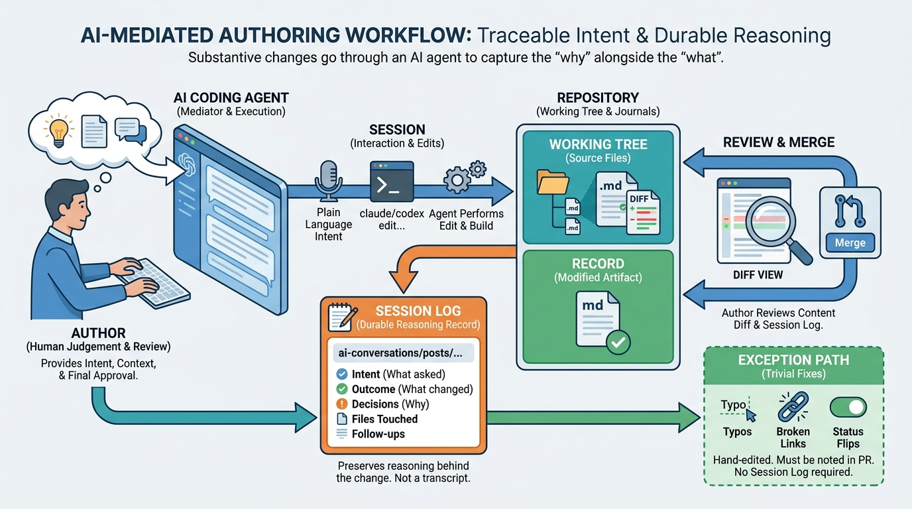

Recoding Decisions
AI-Mediated Authoring as the Default Way to Edit This Repository

Image generated by Google Gemini (gemini-3-pro-image-preview)
Recoding Decisions

Image generated by Google Gemini (gemini-3-pro-image-preview)